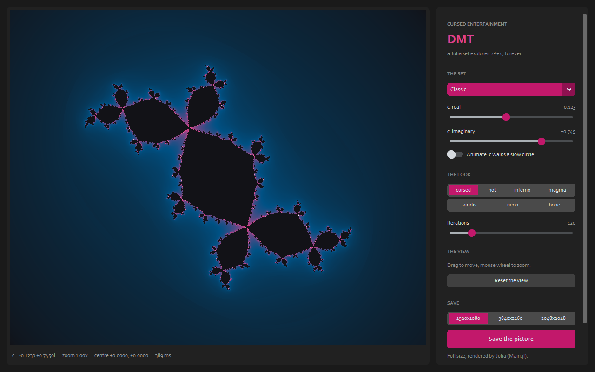
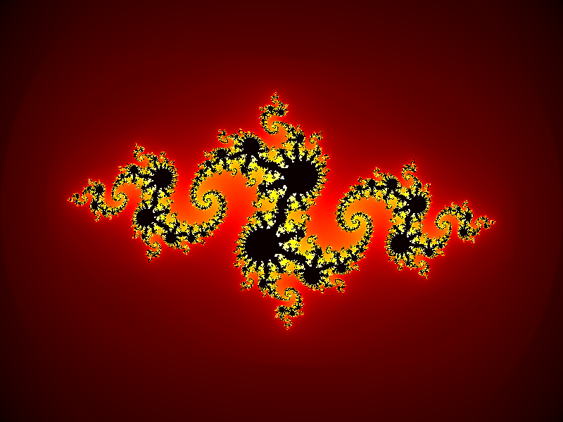
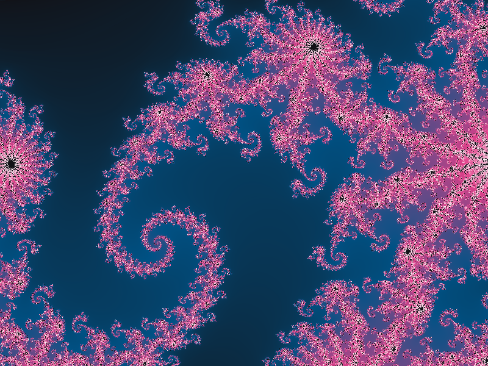
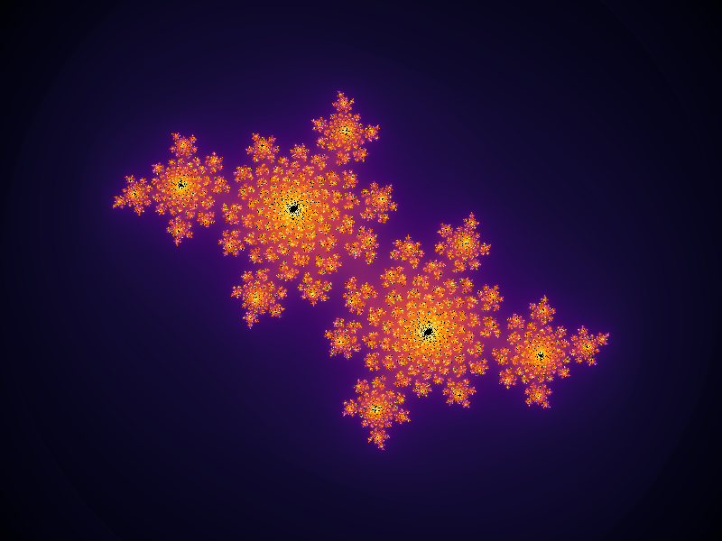
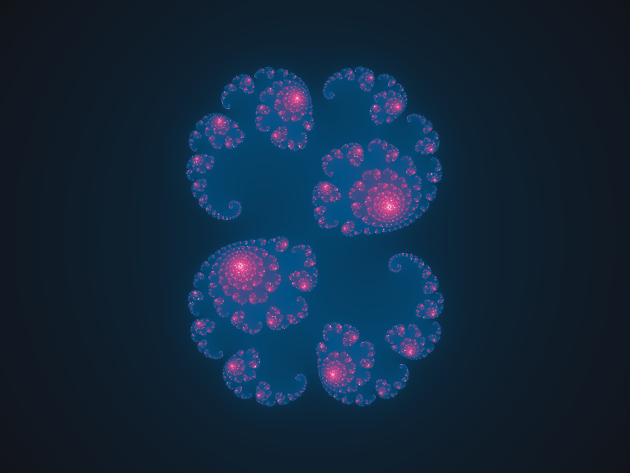

Explore it live
Drag to move, the mouse wheel to zoom, presets or your own c, seven palettes, and Animate: c walks a slow circle and the fractal breathes. Save at full size, rendered by the Julia program.

Palettes




Run it
Start run.bat (or run.ps1, run.sh). It sets itself up the first time: Python for the
window, and Julia's packages for the full-size renders if Julia is installed.